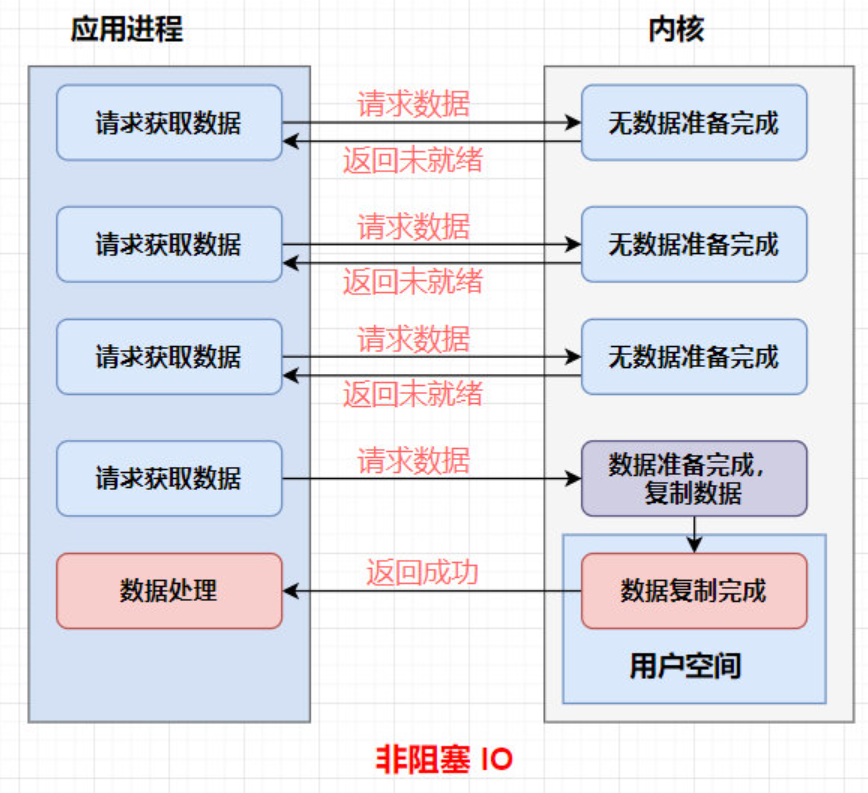
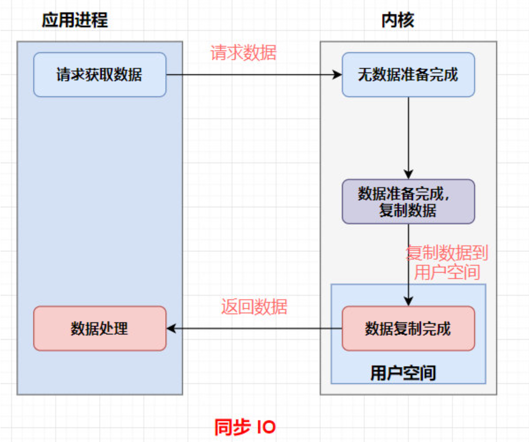
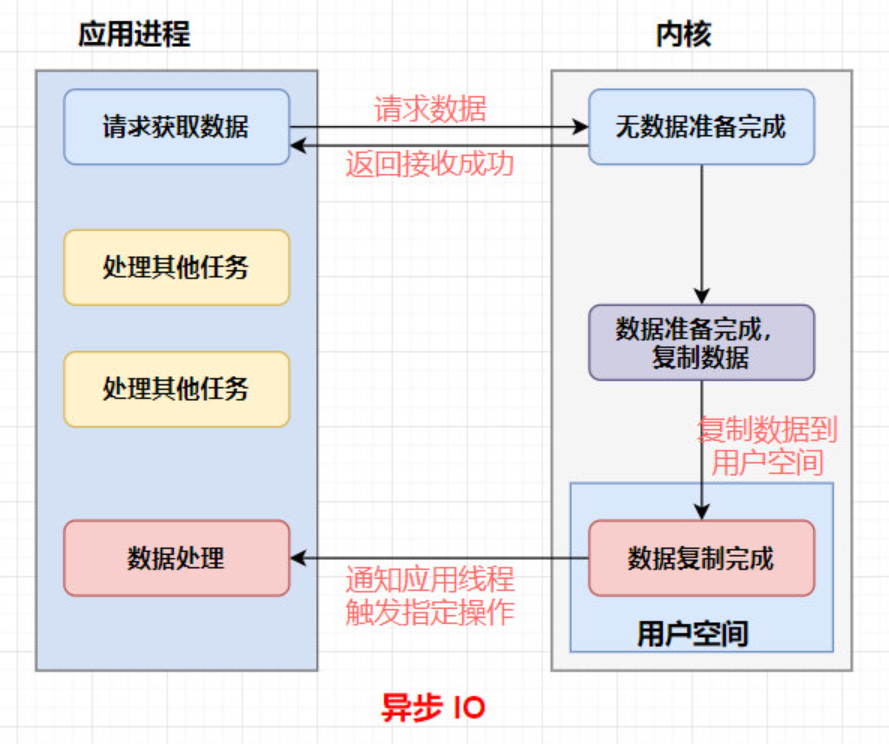
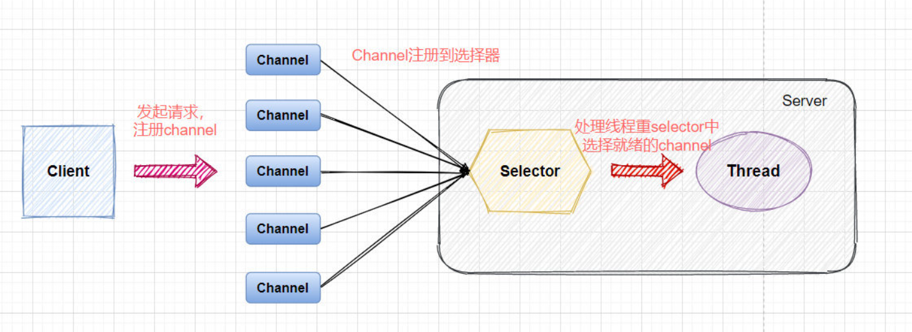
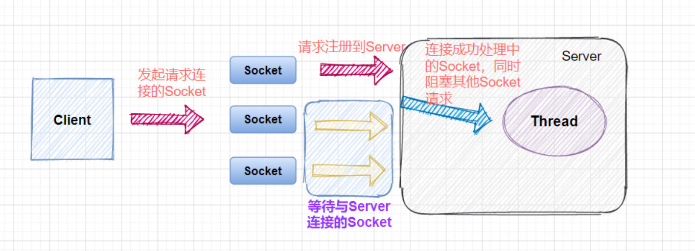
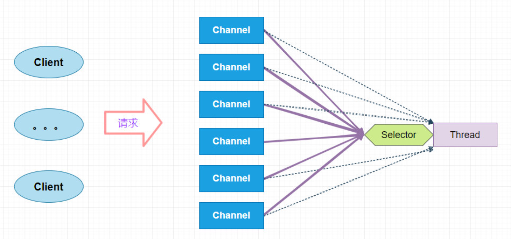
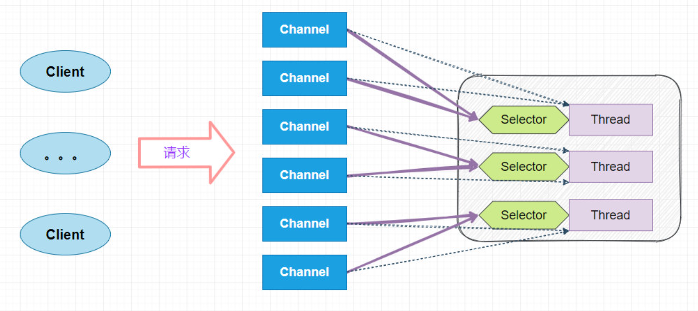
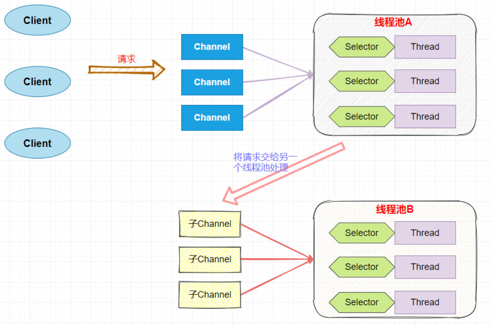
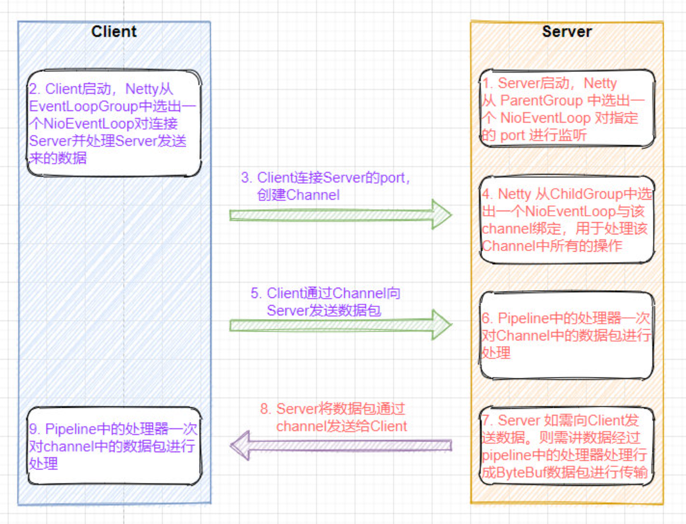

NIO 基本概念
阻塞（Block）与非阻塞（Non-Block）
阻塞和非阻塞是进程在访问数据的时候，数据是否准备就绪的一种处理方式，当数据没有准备的时候。
阻塞：往往需要等待缓冲区中的数据准备好过后才处理其他的事情，否则一直等待在那里。
非阻塞:当我们的进程访问我们的数据缓冲区的时候，如果数据没有准备好则直接返回，不会等待。如果数据已经准备好，也直接返回。
阻塞 IO ：

非阻塞 IO ：
同步（Synchronous）与异步（Asynchronous）
同步和异步都是基于应用程序和操作系统处理 IO 事件所采用的方式。比如
**同步：**是应用程序要直接参与 IO 读写的操作。
**异步：**所有的 IO 读写交给操作系统去处理，应用程序只需要等待通知。
同步方式在处理 IO 事件的时候，必须阻塞在某个方法上面等待我们的 IO 事件完成（阻塞 IO 事件或者通过轮询 IO事件的方式），对于异步来说，所有的 IO 读写都交给了操作系统。这个时候，我们可以去做其他的事情，并不需要去完成真正的 IO 操作，当操作完成 IO 后，会给我们的应用程序一个通知。
所以异步相比较于同步带来的直接好处就是在我们处理IO数据的时候，异步的方式我们可以把这部分等待所消耗的资源用于处理其他事务，提升我们服务自身的性能。
**同步 IO **：
**异步 IO **：
Java BIO与NIO对比
BIO（传统IO）：
BIO是一个同步并阻塞的IO模式，传统的 java.io 包，它基于流模型实现，提供了我们最熟知的一些 IO 功能，比如File抽象、输入输出流等。交互方式是同步、阻塞的方式，也就是说，在读取输入流或者写入输出流时，在读、写动作完成之前，线程会一直阻塞在那里，它们之间的调用是可靠的线性顺序。
NIO（Non-blocking/New I/O）
NIO 是一种同步非阻塞的 I/O 模型，于 Java 1.4 中引入，对应 java.nio 包，提供了 Channel , Selector，Buffer 等抽象。NIO 中的 N 可以理解为 Non-blocking，不单纯是 New。它支持面向缓冲的，基于通道的 I/O 操作方法。 NIO 提供了与传统 BIO 模型中的 Socket 和 ServerSocket 相对应的 SocketChannel 和 ServerSocketChannel 两种不同的套接字通道实现,两种通道都支持阻塞和非阻塞两种模式。对于高负载、高并发的（网络）应用，应使用 NIO 的非阻塞模式来开发
BIO与NIO的对比
| IO模型 | BIO | NIO |
|---|---|---|
| 通信 | 面向流 | 面向缓冲 |
| 处理 | 阻塞 IO | 非阻塞 IO |
| 触发 | 无 | 选择器 |
NIO 的 Server 通信的简单模型：
BIO 的 Server 通信的简单模型：
NIO的特点：
- 一个线程可以处理多个通道，减少线程创建数量；
- 读写非阻塞，节约资源：没有可读／可写数据时，不会发生阻塞导致线程资源的浪费
Reactor 模型
单线程的 Reactor 模型
多线程的 Reactor 模型
多线程主从 Reactor 模型
Netty 基础概念
Netty 简介
Netty 是一个 NIO 客户端服务器框架，可快速轻松地开发网络应用程序，例如协议服务器和客户端。它极大地简化和简化了网络编程，例如 TCP 和 UDP 套接字服务器。
Netty 执行流程
Netty 核心组件
Channel
Channel是 Java NIO 的一个基本构造。可以看作是传入或传出数据的载体。因此，它可以被打开或关闭，连接或者断开连接。
EventLoop 与 EventLoopGroup
EventLoop 定义了Netty的核心抽象，用来处理连接的生命周期中所发生的事件，在内部，将会为每个Channel分配一个EventLoop。
EventLoopGroup 是一个 EventLoop 池，包含很多的 EventLoop。
Netty 为每个 Channel 分配了一个 EventLoop，用于处理用户连接请求、对用户请求的处理等所有事件。EventLoop 本身只是一个线程驱动，在其生命周期内只会绑定一个线程，让该线程处理一个 Channel 的所有 IO 事件。
一个 Channel 一旦与一个 EventLoop 相绑定，那么在 Channel 的整个生命周期内是不能改变的。一个 EventLoop 可以与多个 Channel 绑定。即 Channel 与 EventLoop 的关系是 n:1，而 EventLoop 与线程的关系是 1:1。
ServerBootstrap 与 Bootstrap
Bootstarp 和 ServerBootstrap 被称为引导类，指对应用程序进行配置，并使他运行起来的过程。Netty处理引导的方式是使你的应用程序和网络层相隔离。
Bootstrap 是客户端的引导类，Bootstrap 在调用 bind()（连接UDP）和 connect()（连接TCP）方法时，会新创建一个 Channel，仅创建一个单独的、没有父 Channel 的 Channel 来实现所有的网络交换。
ServerBootstrap 是服务端的引导类，ServerBootstarp 在调用 bind() 方法时会创建一个 ServerChannel 来接受来自客户端的连接，并且该 ServerChannel 管理了多个子 Channel 用于同客户端之间的通信。
ChannelHandler 与 ChannelPipeline
ChannelHandler 是对 Channel 中数据的处理器，这些处理器可以是系统本身定义好的编解码器，也可以是用户自定义的。这些处理器会被统一添加到一个 ChannelPipeline 的对象中，然后按照添加的顺序对 Channel 中的数据进行依次处理。
ChannelFuture
Netty 中所有的 I/O 操作都是异步的，即操作不会立即得到返回结果，所以 Netty 中定义了一个 ChannelFuture 对象作为这个异步操作的“代言人”，表示异步操作本身。如果想获取到该异步操作的返回值，可以通过该异步操作对象的addListener() 方法为该异步操作添加监 NIO 网络编程框架 Netty 听器，为其注册回调：当结果出来后马上调用执行。
Netty 的异步编程模型都是建立在 Future 与回调概念之上的。